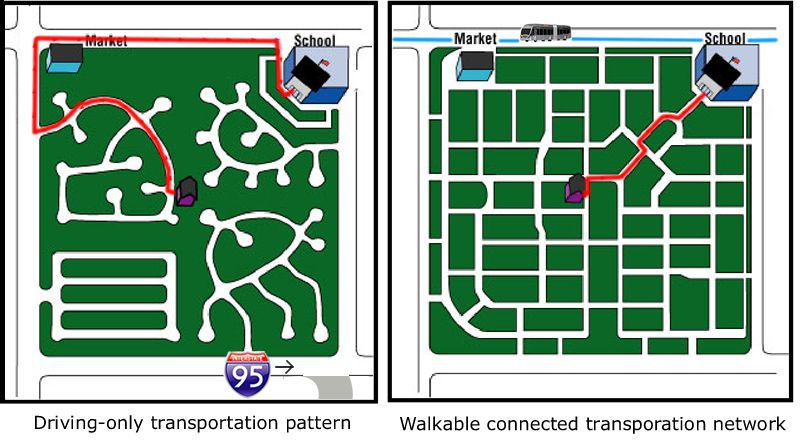
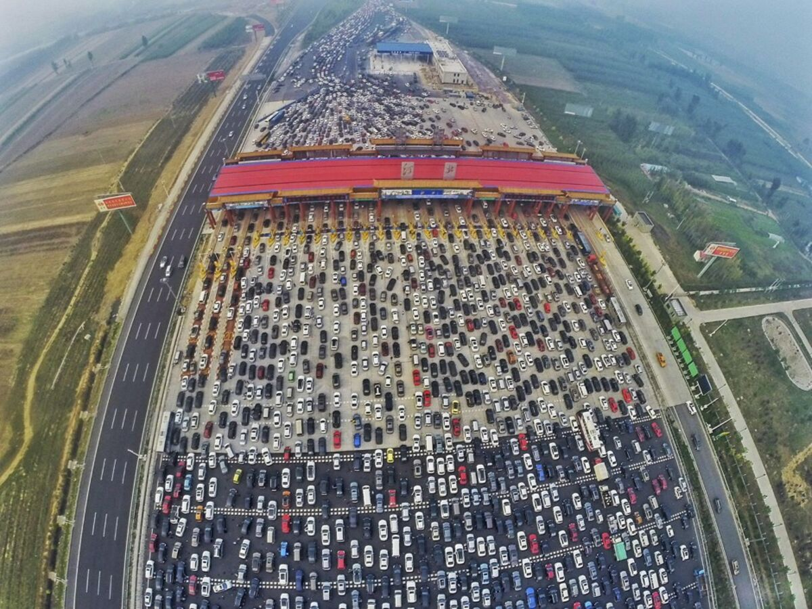

Transportul in Prezent
Cultura si Logistica
Exista diferente culturale asupra transportului.
America: În Statele Unite și în alte țări americane, mașinile personale sunt adesea văzute ca principalul mijloc de transport. Cultura auto este puternică, iar mașinile sunt considerate simboluri ale independenței și libertății individuale. Infrastructura rutieră este bine dezvoltată, iar distanțele mari dintre orașe și regiunile rurale fac ca mașinile să fie o opțiune practică pentru deplasare. Totuși, există și un interes crescut pentru alternativele de transport sustenabil, cum ar fi transportul public și ciclismul, mai ales în marile orașe unde congestia traficului și poluarea sunt probleme majore.

Europa: În Europa, transportul public este frecvent utilizat și este văzut ca un mod eficient și ecologic de a călători. Cultura bicicletei este de asemenea puternică în multe țări europene, iar infrastructura pentru ciclism este bine dezvoltată în orașele mari. Dimensiunile mai mici ale orașelor europene, precum și densitatea populației, fac ca transportul public și alte forme de mobilitate urbană să fie mai practice și mai convenabile decât mașinile personale în multe cazuri. În plus, Europa este un lider în adoptarea tehnologiilor și a politicii care promovează transportul sustenabil și reducerea emisiilor de carbon.
Asia: În multe țări asiatice, precum Japonia și Coreea de Sud, transportul public este larg răspândit și este folosit intensiv în marile orașe. Trenurile de mare viteză și sistemele de metrou sunt esențiale pentru deplasarea rapidă și eficientă în zonele urbane dens populate. În contrast, în țări precum China și India, creșterea rapidă a urbanizării a dus la o dependență crescută de automobile personale, ceea ce a dus la congestie traficului și la probleme legate de poluare și mediu. Cu toate acestea, există eforturi crescânde în întreaga regiune pentru a promova transportul public și alternativ, pentru a aborda problemele legate de mobilitate și mediu.
